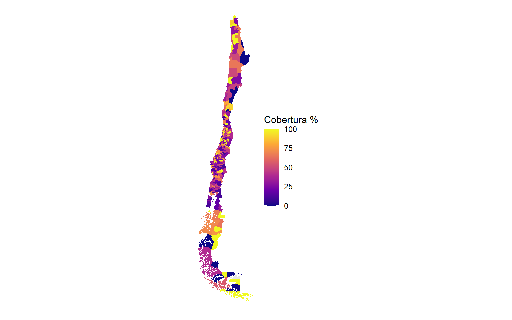

Cada cifra proviene de un pipeline reproducible que cualquiera puede correr con source("R/10_run_all.R"):
00 descarga los REM 2025 del DEIS y la base de establecimientos.01 identifica las prestaciones de participación con un crosswalk curado del diccionario y las clasifica en las secciones A / B / C; reconstruye el universo establecimiento × mes (donde vive el subregistro).02–03 agregan pobreza comunal (CASEN 2024) y el denominador poblacional (FONASA).04 es el motor: para cada sección calcula KPIs, cobertura, serie, equidad, modelo de barrera con efectos aleatorios, multinivel de 3 niveles, espacial y tipologías.06/07/08 corren el motor sobre A, B y C; 09 sintetiza y calcula los indicadores de auditoría social.Las tablas quedan en productos/{A,B,C,sintesis}/ y son lo único que lee este tablero. El sitio se regenera corriendo el pipeline y quarto render.
Codificación UTF-8 con BOM (no Latin-1, como decía la instrucción original) — leído mal, se corrompen los nombres. El subregistro está en filas ausentes, no en celdas vacías: por eso se reconstruye el panel completo establecimiento × mes y no se colapsa NA a 0. El A19b separa instancias y demografía en columnas marginales, así que no es posible cruzar “qué instancia” × “perfil de participante”; la equidad se reporta marginal por subsección. El modelo de barrera de objeto único no converge por la cola extrema; la solución estable es la descomposición en dos partes (barrera logística + intensidad log-lineal), siempre verificando convergencia (modelo_estado.csv).
Red analizada
2.982
establecimientos de la red pública analizados (2025)A · Atención de usuarios
49.9%
de los establecimientos registra OIRSB · Participación social
51.1%
registra participación social (consejos, cabildos)C · Satisfacción usuaria
24.4%
registra gestión de satisfacción usuaria
Cobertura
49.9%
% de establecimientos que registra OIRSConsultas
16.805.909
consultas (el grueso de OIRS, no son reclamos)Reclamos
138.125
reclamos generados en el añoFelicitaciones / reclamos
1.03
felicitaciones por cada reclamoCobertura
24.4%
% de establecimientos que la registraEstablecimientos
727
establecimientos con ≥1 registroSubregistro
91.6%
de combinaciones estab-mes sin registroMujeres
68.7%
de las personas son mujeres